Alpine Smokerei
In der hauseigenen Smokerei werden Zanderfilet, saftige Rippchen und exklusive Wildbratwürste schonend geräuchert: langsam, ehrlich, unverwechselbar im Geschmack.
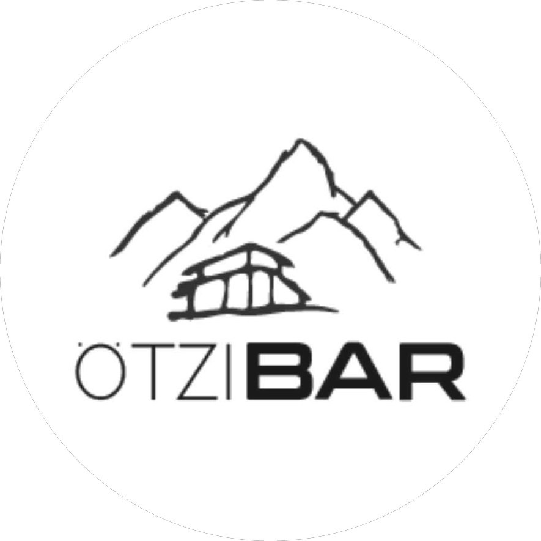
ÖTZIBAR G12Skigebiet Gschwandtkopf · Seefeld in Tirol
Alpine Smokerei & Pasta-Genuss auf 1.500 m, im Winter wie im Sommer
Die Hütte
Die charmante Ötzibar G12 empfängt ihre Gäste direkt im Skigebiet Gschwandtkopf und verbindet authentische Tiroler Werte mit einem einzigartigen kulinarischen Konzept. Wo Gastfreundschaft großgeschrieben wird, spürt man vom ersten Moment an den echten Tiroler Flair, gepflegt mit viel Herzblut vom Team rund um Benjamin.
Ob entspannt im Liegestuhl bei guter Musik, eingekuschelt ins Schaffell auf der Winterterrasse oder gemütlich im Servicebereich: Hier wird jeder Aufenthalt zur genussvollen Auszeit. Nur wenige Schritte vom Chalet G12 entfernt.

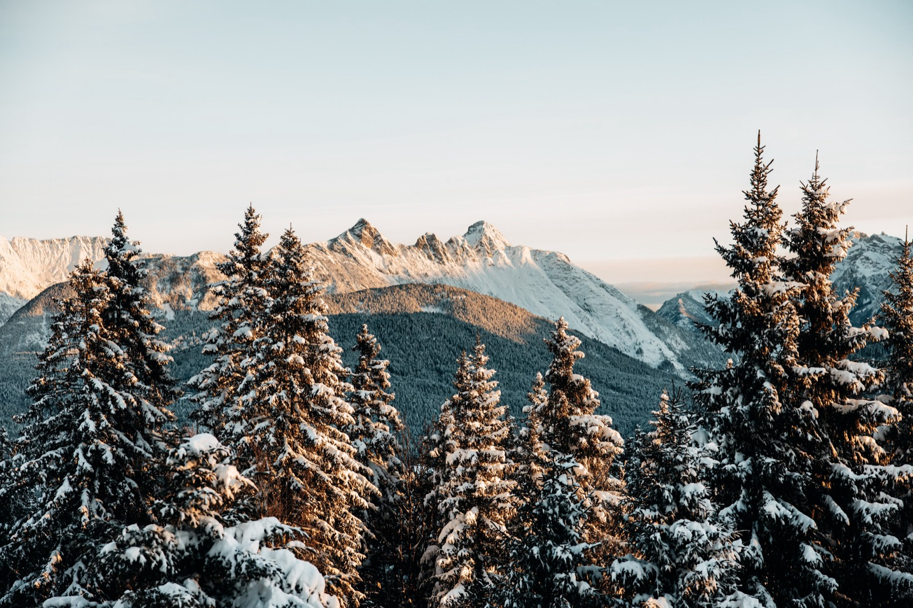
Kulinarik
In der hauseigenen Smokerei werden Zanderfilet, saftige Rippchen und exklusive Wildbratwürste schonend geräuchert: langsam, ehrlich, unverwechselbar im Geschmack.

Von Fusilli bis Tagliatelle: Jede Nudel wird im Haus produziert. Zum Genießen vor Ort oder zum Mitnehmen für daheim.
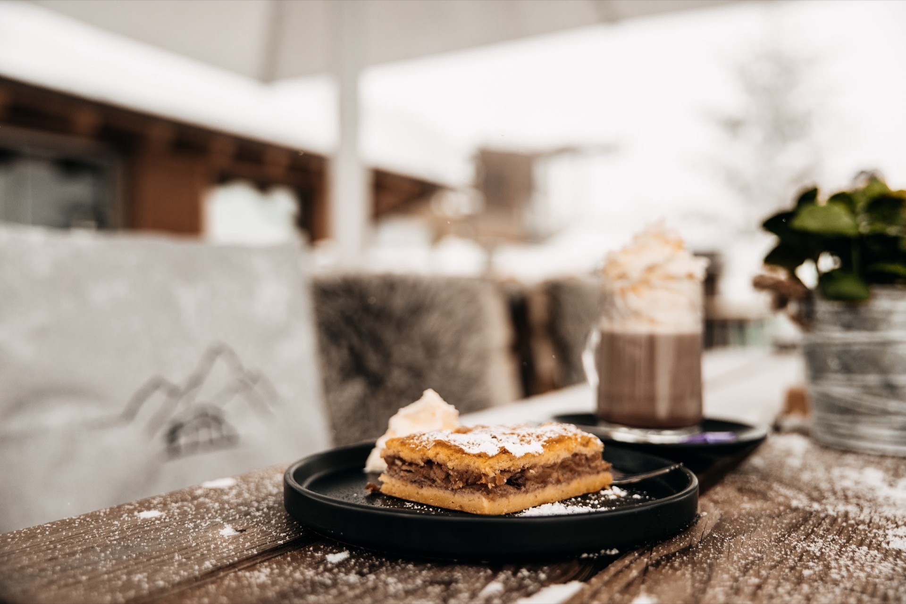
Täglich frische Kuchen und Desserts, hausgemacht vom Chef und seiner Mama. Dazu eine heiße Schokolade mit Schlag: die süße Belohnung nach der Abfahrt.
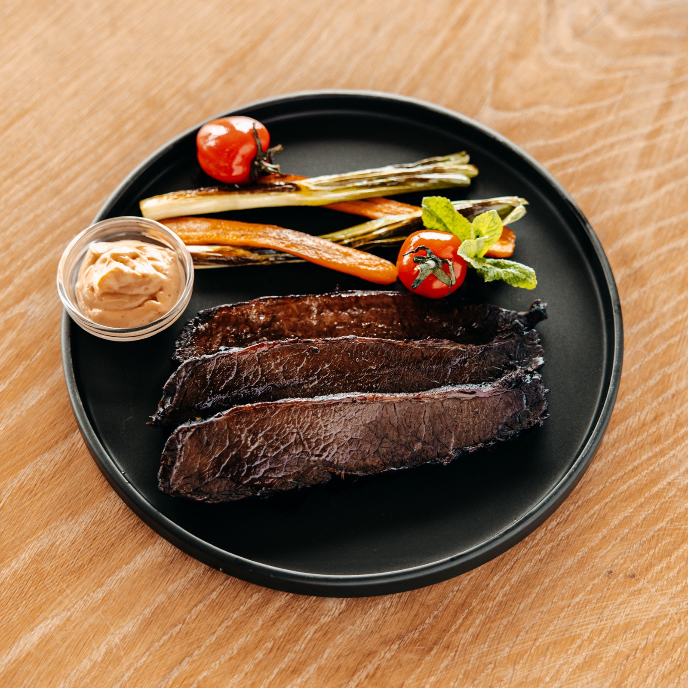
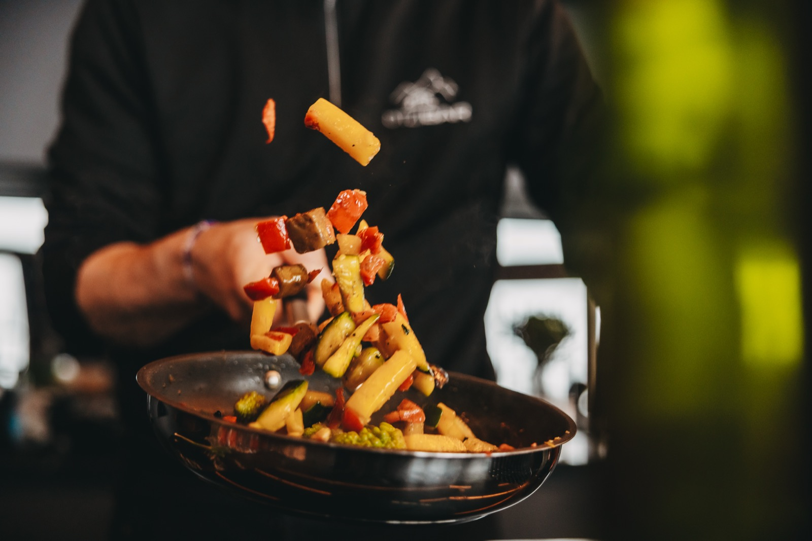
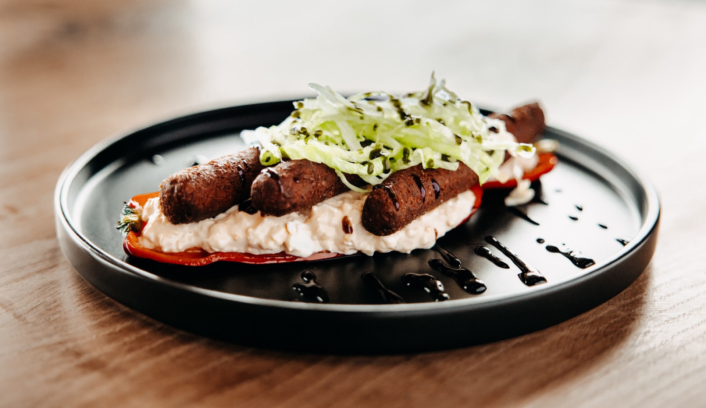
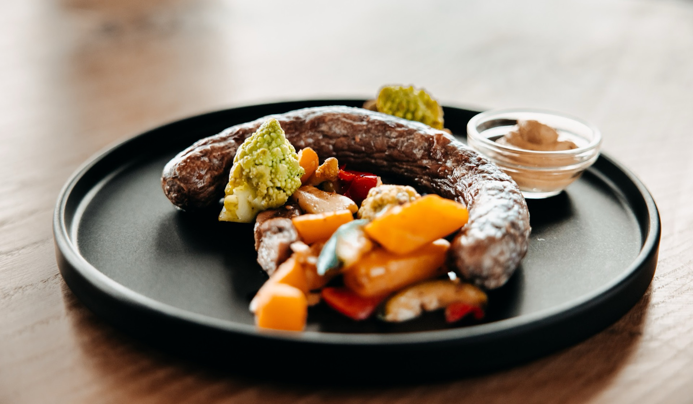
Speisekarte
Neu bei uns
Seit Neuestem wohnen flauschige Walliser Schwarznasenschafe direkt neben der Ötzibar. Die zwei wolligen Kollegen mit ihren schwarzen Gesichtern sind längst die heimlichen Stars am Gschwandtkopf und freuen sich über jeden Besuch.
Gerade für Kinder ein Highlight: Während Mama und Papa auf der Terrasse den Kuchen genießen, wird am Zaun gestaunt, gelacht und fotografiert. Kommt vorbei und sagt Hallo!
Besucht uns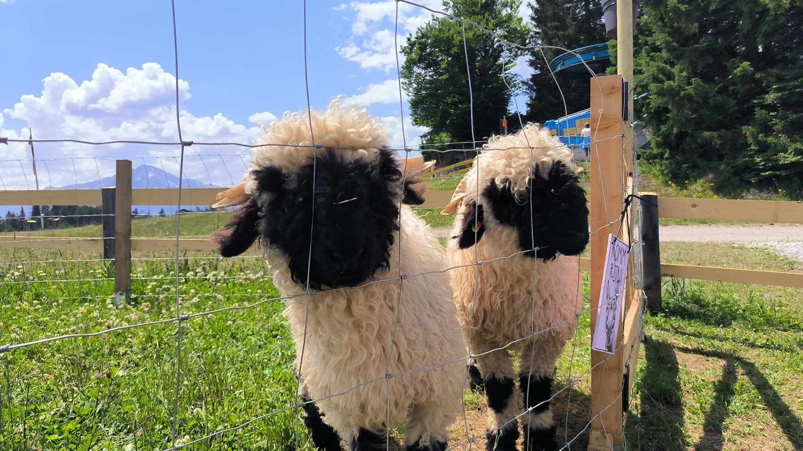
Das Team
Küchenchef Benjamin führt die Ötzibar im Tagesgeschäft und steht selbst am Herd und Smoker. Gemeinsam mit Daniel, der an der Bar und im Service mit anpackt, sorgt er dafür, dass sich jeder Gast vom ersten Moment an willkommen fühlt. Und Nadine vertritt die Eigentümerfamilie von Chalet G12 und Ötzibar: mit viel Herzblut rund um Hütte und Chalet am Machen und Tun.
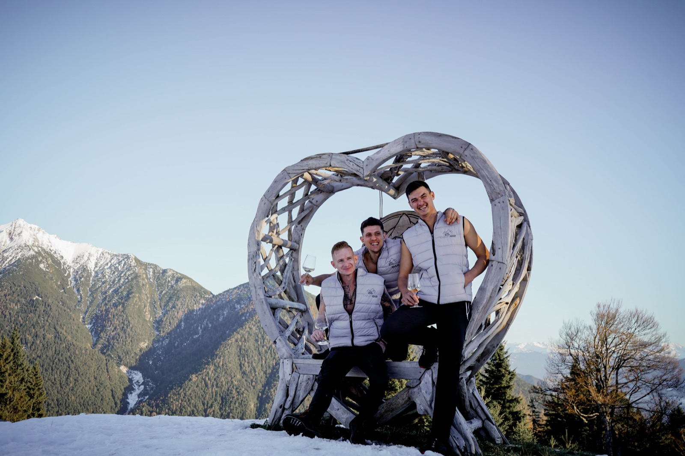
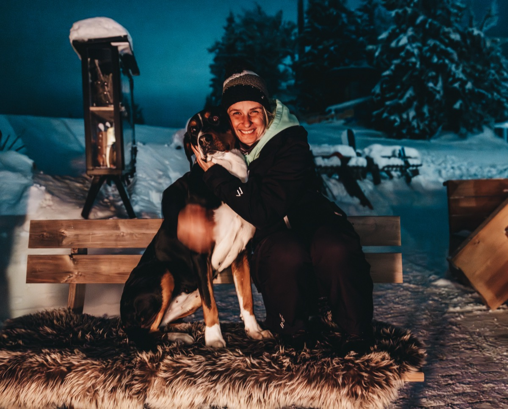
Impressionen
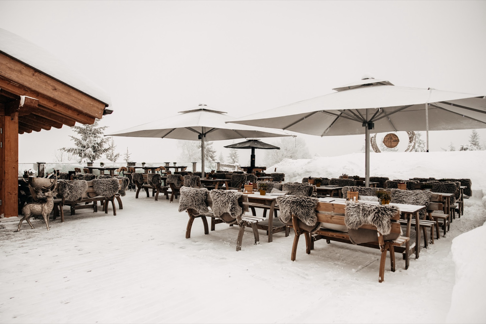

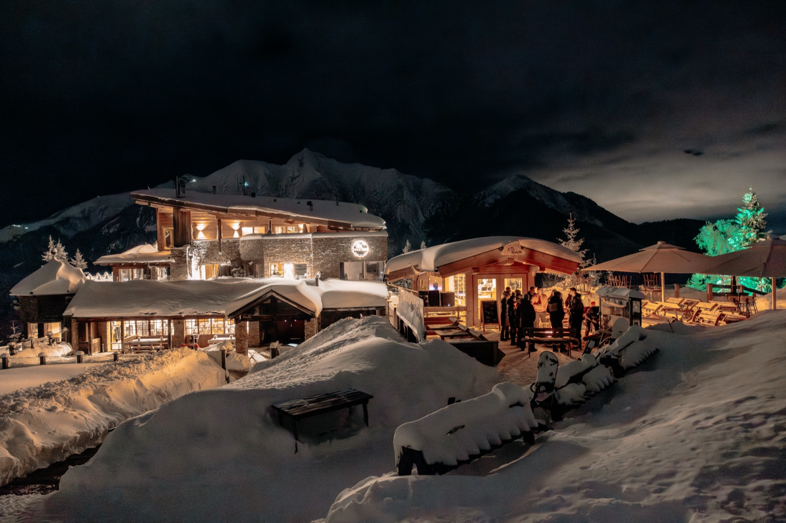

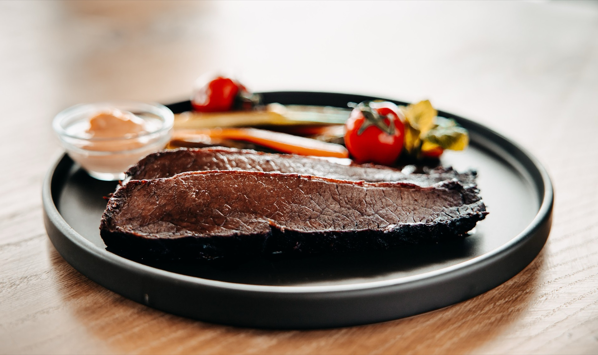

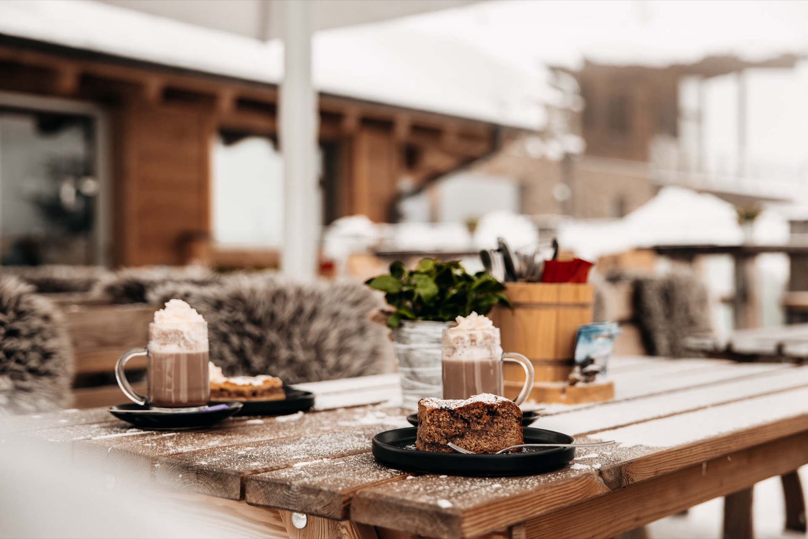
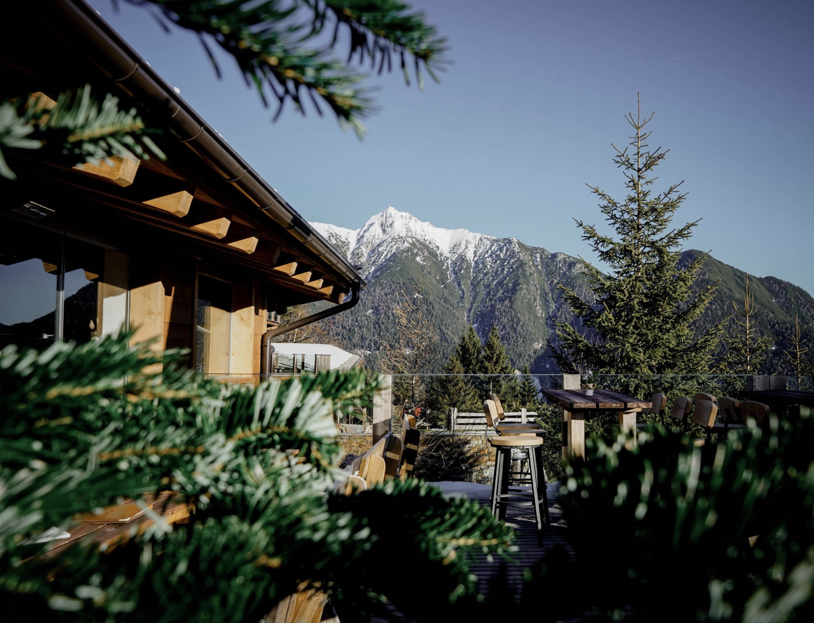
Events & Feiern
Ob runder Geburtstag, Firmenfeier oder ein Fest in größerer Runde: Die Ötzibar und das Chalet G12 lassen sich gemeinsam für private Events buchen. Berge, Sonnenuntergang, gutes Essen aus der Smokerei und Platz zum Feiern, alles an einem Ort.
Der Film zeigt ein solches Event und die Stimmung, die euch erwartet. Schreibt uns einfach, wir planen gerne mit euch.
Anreise & Kontakt
+43 660 445 35 03
contact@chaletg12.com
| Montag bis Sonntag | 10:00 bis 17:00 |
| April & November | geschlossen |
Täglich geöffnet. Im April und November macht die Ötzibar Betriebspause. Aktuelle Zeiten gerne telefonisch erfragen.
Parken an der Talstation der Gschwandtkopf-Lifte. Von dort zu Fuß, mit dem Bike oder bequem mit dem Sessellift zur Hütte. Bahnanreise bis Bahnhof Seefeld.